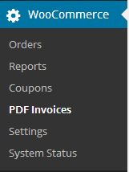

WooCommerce PDF Invoice
Documentation
- created: 10/24/2013
- latest update: 01/07/2014
- by: RightPress
- www.rightpress.net/woocommerce-pdf-invoice
- email: support@rightpress.net
About
This plugin automatically generates PDF invoices and lets your customers receive them by email or download directly from your store. WooCommerce PDF Invoice generates two types of invoices:
- Regular Invoices - this type of invoice is issued to a buyer when the products or services have already been provided or the payment was received and the order is being processed.
- Proforma Invoices - this type of invoice is issued as a commitment from the seller to sell goods or provide services at specified prices and terms, simply it's a confirmed purchase order. Businesses usually issue proforma invoices when dealing with business-to-business sales as in some countries businesses tend to make payments via bank transfer in advance and proforma invoices are basis for such payments.
WooCommerce PDF Invoice generates proforma invoices as soon as the order is placed. Regular invoices are generated when order status is changed to completed. If particular feature is enabled, this module also integrates with standard WooCommerce email functionality and adds attachments to the "New Order" and "Completed Order" emails. Also, as soon as invoices are generated, they can also be downloaded by both customer and administrator from the website itself.
WooCommerce PDF Invoice also attaches PDF invoices to WooCommerce Customer Invoice email - regular invoice if it has already been generated, proforma invoice otherwise (if enabled).
You can easily enable or disable any functionality that was described above from the administrator zone. Please refer to other sections of this documentation for more information.
Installation
To install WooCommerce PDF Invoice plugin simply:
- Make sure you have WordPress 3.5+ and WooCommerce 2.0.x installed
- WooCommerce does not have to be active during installation but this plugin won't do anything without WooCommerce being active
- Download the plugin from CodeCanyon
- Unzip the downloaded file and locate a file called woocommerce-pdf-invoice.zip under Plugin
- Log in to your WordPress administrator zone
- Go to Plugins --> Add New --> Upload
- Upload file woocommerce-pdf-invoice.zip
- Activate the uploaded plugin
- Download the plugin from CodeCanyon
- Extract the archive
- Locate a folder called woocommerce-pdf-invoice under Plugin
- Upload this folder to wp-content/plugins
- In administrator zone, go to Plugins and activate this plugin
Features
- Automatically generates PDF invoices
- Attaches invoices to default WooCommerce emails
- Possible to manually resend invoice
- Uses rock solid TCPDF library
- Lists all taxes as configured in WooCommerce
- Support for multiple different tax rates
- Download link in “View Order” page for users
- Download link next to each order for admin
- Batch download for admin
- Proforma invoices supported
- Nice invoice design
- Set you own company logo and details
- Supports custom content blocks with 17 macros
- Supports up to four custom buyer fields
- Translate invoice labels from admin page
- Translate the entire plugin (.pot file included)
- Set your own invoice notes and footer text
- Display amount in words if needed
- Possible to add invoice prefix
- Change date format
Dependencies
To generate beautiful PDF documents, TCPDF library is used in this plugin. You can read more about it here.
You do not need to do anything with it though, it is included in the plugin and works out of the box.
How to Access Invoices
Customers
Customers receive invoices:
- by downloading them from "View Order" page (link under the table)
- as attachments along with WooCommerce standard emails
Both features may be disabled.
Shop Managers
Shop managers can get invoices by:
- clicking on the invoice download link (download icon) next to each order in the "Orders" page
- downlowding archive of invoices for specified date range from "Batch Download" page (under "PDF Invoices")
Admin: Accessing Admin Page
You can change behavior of the plugin, translate text strings, download invoices in batches by clicking on "PDF Invoices" under WooCommerce menu.

Admin: General Settings
On General Settings page you can enable or disable specific functionality and control other main settings of this module.
General Settings
These are the main settings of this plugin.
The following fields are available:
- Enable invoicing - enable or disable invoicing. Invoices are generated as soon as orders are marked as completed. If enabled, invoices will also be attached to manually sent Customer Invoice emails.
- Display invoice buttons - if enabled, download button will be displayed for a customer next to each order in the orders list. These buttons are optional - if you disable them, invoice download links will still be displayed on a single order details page if Allow download is checked.
- Display currency symbol - if enabled, currency symbol (e.g. $) will be displayed next to every amount on the invoice. Currency code (e.g. USD) is displayed next to total amount in any way.
- Display amount inclusive of tax - if enabled, line item price, line subtotal and subtotal will be displayed inclusive of tax. This setting is ignored when tax is displayed inline - amounts will be displayed exlusive of tax.
- Display tax rows - if enabled, all applicable taxes will be listed just above Total row. This setting is ignored when tax is displayed inline (with an exception of shipping tax).
- Display tax inline - select "When different rates are present", "Always" or "Never". You may need to display net amount, tax rate and tax amount individually for each line item. This is useful when different rates of the same tax are used for different items on the same invoice, e.g. reduced VAT rate is applied to specific group of products.
- Display product ID/SKU - if enabled, product ID/SKU will be displayed for each item just before the name.
- Date format - change date format if needed.
Invoice Settings
These are settings for regular invoices only.
The following fields are available:
- Allow download - show or hide download link. If enabled, clients will be able to download invoices from order preview page.
- Send by email - enable or disable sending by email. If enabled, PDF invoice will be emailed to the client along with Order Completed email.
- Invoice number prefix - enter invoice number prefix if needed.
- Next invoice number - change next invoice number if needed.
Proforma Invoice Settings
These are settings for proforma invoices only.
The following fields are available:
- Enable proforma invoicing - enable or disable proforma invoices. Proforma invoices are generated as soon as order is placed. Proforma invoice ID equals order ID. As soon as order is processed, proforma invoices are replaced with newly generated regular invoices. If enabled, proforma invoices will also be attached to manually sent Customer Invoice emails.
- Allow download - show or hide download link. If enabled, clients will be able to download proforma invoices from order preview page.
- Send by email - enable or disable sending by email. If enabled, PDF proforma invoice will be emailed to the client along with New Order email.
Advanced
These settings are for advanced users only. Do not use them unless you really know what you are doing!
The following fields are available:
- Display amount in words - depending on your country, you may need to print amount in words on your invoices. Use translation file that comes with this plugin to translate numbers, set your own currency and plural forms.
Admin: Seller & Buyer
On Seller & Buyer page you can format Seller and Buyer block layout, set up your information and change logo image.
Seller Block
Use this section to change your company's logo and edit main information.
The following fields are available:
- Logo image - enter URL or select from library your company logo image file.
- Logo resize factor (in percent) - increase this number if you want to make your logo larger on the invoice and vice versa..
- Block title - change title of the seller details block.
- Company name - change company name.
- Company details - use this field to set up your company details, including address, company registration number, tax code etc..
Buyer Block
Use this section to change the layout of the buyer details block.
The following fields are available:
- Block title - change title of the seller details block.
- Buyer details layout - use this field to set up the layout of the buyer details block. The following macros are available: {{billing_address_1}}, {{billing_address_2}}, {{billing_postcode}}, {{billing_city}}, {{billing_state}}, {{billing_country}}, {{billing_email}}, {{billing_phone}}. You can use custom fields in the same way, e.g. {{my_custom_field_key}}. Do not include buyer first name, last name and company name - these fields are displayed automatically.
- Remove lines with empty values - if enabled, all lines that contain macros with empty values only will be removed.
Admin: Content Blocks
Content blocks are used to display additional information on the invoice like your bank account details. Leave fields blank to hide.
Footer
Use this field to change what's displayed on the footer of your invoice.
Custom blocks
Custom content blocks are used to display additional information on the invoice like your bank account details. Leave can leave fields blank to hide them completely.
There are four custom blocks in total that can be controlled individually. The following fields are available:
- Title - title for the custom content block (e.g. "Order notes").
- Content - content of the custom content block.
- Displayed on - chose whether to display this block on regular invoices, on proforma invoices, or both.
Macros
You can use macros to dynamically insert order details into footer text, content block title or content block text.
The following macros are available:
To use macros, simply insert one of them where you want particular value to appear - macro will be replaced with actual content on the fly.
To add your own additional macros, use filter hook woo_pdf_macros.
Admin: Translation
On this page, you can translate all titles / labels that are displayed on the invoice.
Simply change the value and submit the form to make changes.
If you wish to translate the plugin itself, use .pot file that comes with this plugin under /languages directory (requires some technical knowledge).
Admin: Batch Download
On Batch Download page, you can download all regular invoices that were generated during particular time frame in a single ZIP archive.
If you wish to download invoices in batch, not one by one, simply go to Batch Download section, select your desired date range and hit "Download Invoices". ZIP file will be pushed to your browser with all invoices that were generated during this period.
Admin: Order Actions
This plugin adds a widget to the right sidebar in the "Edit Order" view. This widget allows you to download proforma invoice or generate regular invoice:

For completed orders, this widget allows you to download regular invoice or delete it if you need to re-generate it when order details are changed:
Please note that if you regenerate invoice, its number will be changed to the next available number.
Support
If you have any questions, do not hesitate to visit our support center or submit a support ticket.